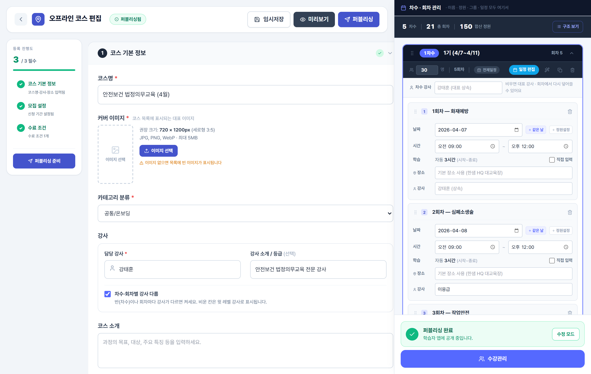
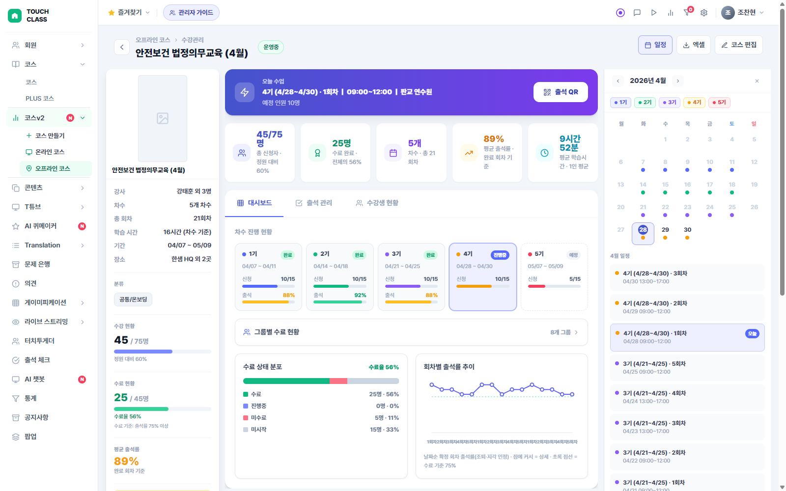
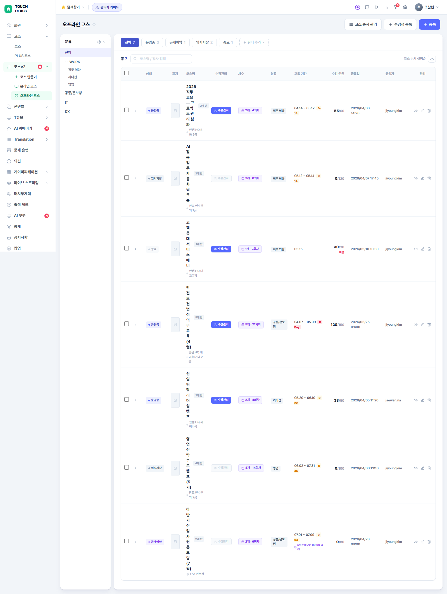

NEW
2026-05 newcourse 시스템 추가. 본 가이드의 운영 정책은 현재 운영중인 오프라인 LMS(레거시 v1) 기준입니다. 신규 코스 등록 시 어드민 사이드바의 코스v2 그룹에서 온라인 코스 / 오프라인 코스(newcourse 패러다임)도 선택 가능합니다. 두 시스템은 데이터·기능 영구 분리. 자세한 내용은 newcourse.html.
운영 케이스 Phase 1
케이스 전체 목록
Phase 1에서 실제 운영 중 발생하는 주요 흐름입니다. 기획팀은 정책 기준으로, 운영팀은 실무 절차로 활용하세요.
Phase 1 운영 케이스 전체
| 케이스 ID | 케이스명 | 주요 담당자 | 관련 화면 | 핵심 정책 근거 |
|---|---|---|---|---|
| FLOW-01 | 코스 개설 — 기본정보 입력부터 퍼블리싱까지 | 고객사 담당자 | offline-builder | 4.7 퍼블리싱 8항목 체크 |
| FLOW-02 | 자율 수강신청 — 학습자가 직접 차수 신청 | 학습자 | 학습자 앱 | 4.5 수강신청 (자율) |
| FLOW-03 | 강제 할당 — HRD가 부서·직급 단위 배정 | 고객사 담당자 | offline-builder | 4.5 수강신청 (강제) |
| FLOW-04 | 현장 QR 출석 — 수업 당일 라이브 모드 운영 | 강사 / 고객사 담당자 | offline-view | 4.1~4.3 출석 상태·지각·마감 |
| FLOW-06 | 코스 목록 탐색 — 관리자 목록 화면 필터 탐색 | 고객사 담당자 / 운영팀 | offline-list.html | 6.1 코스 목록 기능 |
| — | 퍼블리싱 체크리스트 — 공개 전 8항목 확인 | 고객사 담당자 / 운영팀 | offline-builder | 4.7 퍼블리싱 |
FLOW-05 (수료 처리)는 Phase 2 예정입니다. 수료 처리 버튼은 현재 없으며, 출석률 통계는 대시보드에서 확인할 수 있습니다.
담당자별 주요 케이스
| 담당자 | 주요 케이스 | 참조 가이드 |
|---|---|---|
| 고객사 담당자 | 코스 개설(FLOW-01) · 강제 할당(FLOW-03) · 퍼블리싱 체크리스트 · 회차 종료 (시간 기반 자동) · 수강신청 취소 처리 | 운영 케이스 + 2장 회차 종료 + 4장 수강신청 |
| 강사 | 현장 QR 출석 운영(FLOW-04) · 스캔 오류 대응 | 운영 케이스 FLOW-04 + 6장 QR 운영 |
| 운영팀 | 출석 상태 정정 · CS 응대 · 에스컬레이션 판단 · 코스 목록 탐색 | 1장 출석 처리 + 5장 데이터 정정 + 7장 CS 응대 |
| 기획팀 | 정책 기준 관리 · 갭·이슈 기록 · Phase 2 우선순위 결정 | 전체 가이드 (정책 근거 확인용) |
운영 케이스 Phase 1
퍼블리싱 체크리스트
코스를 학습자에게 공개하려면 아래 8가지 항목이 모두 충족돼야 퍼블리싱 버튼이 활성화됩니다. 하나라도 빠지면 버튼이 눌리지 않습니다.
퍼블리싱 필수 8항목 핵심
| 순번 | 항목 | 확인 방법 | 미완료 시 증상 |
|---|---|---|---|
| ① | 코스명 | 기본정보 섹션 1 — 코스명 입력 여부 | 퍼블리싱 버튼 비활성 |
| ② | 담당 강사 | 기본정보 섹션 1 — 강사 선택 여부 | 퍼블리싱 버튼 비활성 |
| ③ | 교육 장소 | 기본정보 섹션 1 — 장소명 입력 여부 | 퍼블리싱 버튼 비활성 |
| ④ | 신청 기간 | 수강 신청 설정 — 신청 오픈/마감 일시 입력 여부 | 퍼블리싱 버튼 비활성 |
| ⑤ | 차수 1개 이상 | 커리큘럼 사이드바 — 차수 생성 여부 | "최소 1개 차수 필요" 안내 |
| ⑥ | 모든 차수에 회차 | 커리큘럼 사이드바 — 각 차수에 회차가 1개 이상 있는지 | 경고 표시 |
| ⑦ | 회차 날짜·시간 | 각 회차에 날짜·시작·종료 시간 입력 여부 | 퍼블리싱 버튼 비활성 |
| ⑧ | 수료 조건 1개 | 수료 조건 섹션 — 출석률 기준 설정 여부 (기본 75%) | 퍼블리싱 버튼 비활성 |
8항목 모두 충족 시 퍼블리싱 버튼이 활성화되며, 클릭 즉시 학습자 앱에 코스가 노출됩니다.
퍼블리싱 후 수정 가능 범위
| 수정 시점 | 가능 여부 | 수정 가능 항목 |
|---|---|---|
| 퍼블리싱 후 | ✅ 가능 | 코스명, 강사소개, 코스소개 등 기본정보 |
| 수강생 배정 전 | ⚠️ 조건부 | 차수 삭제, 정원 축소 — 수강생이 배정되기 전까지만 가능 |
| 수강생 배정 후 | ❌ 제한 | 차수 삭제 불가. 정원 축소 불가 (기배정 인원 초과 시) |
운영 케이스 FLOW-01
코스 개설
고객사 담당자가 신규 오프라인 코스를 등록하고 공개하는 전체 흐름입니다. 총 소요 시간: 약 10~15분.
현 어드민 화면 — offline-builder.html
화면 열기 ↗

코스 개설 단계별 흐름 FLOW-01
1
관리자 화면 → "새 코스 등록" 클릭
코스 등록 빌더(offline-builder.html) 진입
2
섹션 1: 기본정보 입력 (약 3분)
코스명 · 카테고리 · 강사 · 교육 장소(장소명/주소/교통안내) · 코스 표지 이미지
3
섹션 2: 수강 신청 설정 (약 2분)
수강 방식(자율/강제) · 신청 오픈·마감 일시 · 취소 정책 · 재수강 허용 여부 · 지각 기준(기본 10분)
4
차수 생성 (약 3분)
차수명 · 정원 · 담당 강사 · 그룹 배정(강제 할당 시). 우측 사이드바에서 편집
5
회차 생성 (약 2~5분)
수동 입력 또는 일괄 생성(🪄 버튼 → 요일·시간 선택 → 자동 생성). 각 회차에 날짜·시작·종료 시간 필요
6
섹션 4: 수료 조건 확인 (기본 출석률 75%)
Phase 1에서는 출석률 기준만 설정. 기본값 75% 그대로 사용해도 무방
7
퍼블리싱 8항목 확인 → "퍼블리싱" 클릭
버튼이 활성화되면 8항목 모두 충족된 상태. 클릭 즉시 학습자 앱에 노출
주요 의사결정 포인트
| 의사결정 항목 | 선택지 | 선택 기준 |
|---|---|---|
| 수강 방식 | 자율 수강 / 강제 할당 | 학습자가 직접 고르는 교육 → 자율. 법정의무교육·전사 필수교육 → 강제 할당 |
| 재수강 허용 | ON / OFF (기본 OFF) | 매년 재이수 필요한 교육(법정의무 등) → 반드시 ON |
| 지각 기준 | 0분 / 10분(기본) / N분 | 지각 구분 불필요 → 0분. 일반 교육 → 10분 |
| 수강 유형 (차수별) | 전체수강 / 날짜선택형 | 모든 회차 참석 → 전체수강. 날짜 중 1개만 선택 → 날짜선택형 |
운영 케이스 FLOW-02
자율 수강신청
학습자가 교육 목록에서 직접 원하는 차수를 선택해 신청하는 흐름입니다. 관리자 개입 없이 학습자가 전체 처리합니다.
학습자 신청 흐름 FLOW-02
1
학습자 앱 → 교육 목록에서 코스 선택
코스 상세 화면 진입. 차수 목록과 잔여석 확인 가능
2
차수 목록 확인 (날짜, 시간, 잔여석)
잔여석이 있는 차수만 신청 가능. 마감된 차수는 "마감" 배지로 표시
3
"신청" 클릭 → 확인 팝업
신청 완료 시 잔여석 -1 자동 반영
예외 케이스 처리 기준 핵심
| 상황 | 시스템 동작 | 운영팀 대응 |
|---|---|---|
| 정원 마감 (잔여석 0) | 마감 배지 표시, 신청 불가 | 다른 차수 안내. 대기 기능 없음 |
| 신청 기간 외 | 신청 버튼 비활성. 신청 기간 표시 | 신청 기간을 안내. 기간 연장 필요 시 고객사 담당자에게 전달 |
| 동일 차수 중복 신청 | "이미 신청됨" 안내 | 중복 신청은 시스템에서 자동 차단. 추가 대응 불필요 |
| 재수강 허용 OFF + 기수료 | "이미 수료한 교육" 안내 | 재수강이 필요하면 고객사 담당자에게 재수강 허용 토글 요청 |
| 재수강 허용 ON + 기수료 | 다른 차수 신청 가능 | 정상 신청 가능. 별도 대응 불필요 |
| 취소 기한 내 취소 요청 | 학습자 직접 취소 가능 | 잔여석 +1 자동 반영. 별도 대응 불필요 |
| 취소 기한 초과 후 취소 요청 | 학습자 직접 취소 불가 | 운영팀이 수강생 관리 화면에서 직접 취소 처리 |
운영 케이스 FLOW-03
강제 할당
고객사 담당자가 부서·직급 단위로 수강생을 직접 배정하는 흐름입니다. 법정의무교육, 전사 필수교육에 주로 사용합니다.
강제 할당 흐름 FLOW-03
1
코스 등록 빌더 → 섹션 2 수강 신청 설정 → "관리자가 강제 할당" 선택
이 선택을 해야 차수 편집 사이드바에서 그룹 배정 UI가 활성화됨
2
차수 편집 사이드바 → "배정 그룹" 섹션에서 대상 그룹 선택
부서 / 직급 단위 그룹 선택. 그룹별 할당 한도 입력 가능
3
정원 자동 계산 확인
선택한 그룹 인원 합계가 정원으로 자동 계산됨. 미배정석도 표시됨
4
퍼블리싱 → 대상 그룹 전원 학습자 앱에 자동 배정
학습자는 선택권 없이 배정됨. 배정 취소는 고객사 담당자만 가능
강제 할당 주요 규칙
| 항목 | 규칙 |
|---|---|
| 학습자 신청 여부 | 학습자가 직접 신청하지 않음. 고객사 담당자가 그룹 단위로 일괄 배정 |
| 취소 권한 | 학습자 직접 취소 불가. 고객사 담당자만 수강생 관리 화면에서 제거 가능 |
| 정원 계산 | 그룹 인원 합산으로 정원 자동 계산. 별도 정원 입력 불필요 |
| 법정의무교육 | 재수강 허용 토글을 반드시 ON으로 설정 (매년 재이수 필요) |
| 앱 노출 시점 | 퍼블리싱 즉시 학습자 앱에 노출 (Phase 3에서 시점 조정 가능 예정) |
운영 케이스 FLOW-04
현장 QR 출석 운영
수업 당일 강사 또는 고객사 담당자가 라이브 모드로 QR 출석을 운영하고 회차를 마감하는 전체 흐름입니다.
현 어드민 화면 — offline-view.html
화면 열기 ↗

수업 당일 출석 운영 흐름 FLOW-04
1
수강관리 화면(offline-view) → 출석 탭 → 해당 회차 선택
수업 당일 수업 시작 전에 미리 화면을 열어둡니다
2
"라이브 모드" 버튼 클릭 → QR 코드 대형 표시
빔프로젝터 또는 대형 모니터에 화면 띄우기. QR은 30초마다 자동 갱신됨
3
수강생이 스마트폰으로 QR 코드 스캔
지각 기준 이내 → 출석. 초과 → 지각. 우측 실시간 명단에 즉시 표시
4
수업 종료 후 미확인 인원 확인 및 수동 처리
QR을 못 찍은 수강생 → 실제 출석 여부 확인 후 상태 드롭다운으로 수동 변경
5
수업 종료 시각 도래 → 회차 자동 종료 (별도 클릭 없음)
남은 미확인 인원 전원 결석으로 일괄 전환. 마감 취소 불가
출석 상태 결정 기준 요약
| 상황 | 결과 상태 | 비고 |
|---|---|---|
| 지각 기준 이내 QR 스캔 | 출석 | 기본값 10분 이내 |
| 지각 기준 초과 QR 스캔 | 지각 | 수료 계산에서 출석으로 인정 |
| QR 없이 수동 처리 (실제 출석) | 출석 또는 지각 | 관리자가 드롭다운에서 직접 선택 |
| 수업 중 퇴장 | 조퇴 | 관리자 수동 처리만 가능. QR로 처리 안 됨 |
| 미확인 상태로 회차 종료 | 결석 | 운영자가 직접 정리 (수동으로 결석 처리) |
회차 종료 후 처리 권장: 미확인 인원이 남아 있으면 운영자가 직접 정리하세요. 학습자 클레임 줄이려면 일찍 처리하는 게 좋아요.
운영 케이스 FLOW-06
코스 목록 탐색
관리자 메인 화면에서 코스를 필터링하고, 차수 현황을 확인하고, 수강관리 화면으로 이동하는 흐름입니다.
현 어드민 화면 — offline-list.html
화면 열기 ↗

코스 목록 탐색 흐름 FLOW-06
1
관리자 메인 (offline-list.html) 접속
상단 상태 탭(전체/준비중/모집중/진행중/완료) + 좌측 카테고리 트리 표시
2
상태 탭 또는 카테고리 선택으로 필터링
복합 필터 적용 가능. 탭 클릭 시 카운트 배지도 업데이트
3
코스 행 클릭 → 차수 인라인 확장
잔여석·일정·모집 상태 등 차수 상세가 행 아래로 펼쳐짐
4
"수강관리" 버튼 클릭
offline-view.html로 이동. 수강생·출석·통계 관리 화면
코스 상태별 의미 핵심
| 상태 | 의미 | 운영팀이 해야 할 것 |
|---|---|---|
| 준비중 | 아직 퍼블리싱 전. 학습자 앱에 안 보임 | 퍼블리싱 8항목 확인 → 공개 처리 |
| 모집중 | 신청 기간 내. 학습자가 신청 가능한 상태 | 잔여석 모니터링. 정원 초과 문의 대응 |
| 진행중 | 수업이 진행 중인 상태 (신청 기간 종료 후) | 회차별 출석 관리. QR 운영 준비 |
| 완료 | 모든 회차 종료 완료 (운영자가 미확인 인원 정리 후) | 수료율 통계 확인. Phase 2 수료 처리 대기 |
코스 목록 주요 기능
| 기능 | 사용 방법 | 활용 케이스 |
|---|---|---|
| 상태 탭 필터 | 상단 탭 클릭 (전체/준비중/모집중/진행중/완료) | 현재 진행 중인 코스만 보고 싶을 때 |
| 카테고리 필터 | 좌측 카테고리 트리에서 클릭 | 특정 분류 코스만 볼 때 |
| 검색 | 검색창에 코스명 입력 | 특정 코스를 빠르게 찾을 때 |
| 차수 인라인 확장 | 코스 행 클릭 | 차수별 잔여석·날짜를 빠르게 확인 |
| 코스 삭제 | 행 우측 삭제 버튼 또는 체크박스 다중 선택 후 삭제 | 잘못 등록된 코스 제거 |
운영 케이스 Phase 1
실제 코스 케이스북 — 20케이스
운영팀이 지난 1년간 실제로 굴려본 코스 20개를 그대로 모아 정리한 페이지입니다. 코스마다 "어떤 교육이고, 누가 듣고, 어떻게 운영하면 되는지"를 사람 말로 적었어요. 처음 보는 운영자도 그대로 따라 할 수 있게 만들었습니다.
각 카드 보는 법
상단 배지가 정식이면 시스템만으로 끝까지 운영 가능, 조건부면 인사팀 협조가 먼저 필요, 부분이면 일부 단계는 운영자가 손으로 처리, 워크어라운드면 정식 흐름이 안 돼서 우회로 사용.
상단 배지가 정식이면 시스템만으로 끝까지 운영 가능, 조건부면 인사팀 협조가 먼저 필요, 부분이면 일부 단계는 운영자가 손으로 처리, 워크어라운드면 정식 흐름이 안 돼서 우회로 사용.
A. 법정 의무 교육 (4) 강제할당 + 매년 재이수
①
2026년 직장 내 성희롱 예방 교육
회사 다니는 모든 직원이 1년에 한 번 꼭 들어야 하는 법정 의무 교육이에요.
대상 전직원
규모 1500명
일정 분기 1번 · 본부별 4차수
출석 75% 이상
💡 어떻게 운영하나요
한 강의실에 1500명을 못 넣으니까 영업·개발·관리·지원 4개 본부로 차수를 나눠서 운영해요. 본부 그룹 칩으로 인원을 자동 배정한 다음, 강의실 입구에서 학습자가 QR을 찍으면 출석 처리됩니다. 75% 이상 출석하면 자동 수료.
⚠️ 주의할 점
한 차수에 400명 가까이 들어오면 QR이 30초마다 바뀌는 동안 다 못 찍어요. 입장 게이트를 2개로 나누고 QR 화면도 2대 따로 띄우세요. 그래야 줄이 길어지지 않아요.
②
2026 산업안전보건 정기교육
사고 없이 일하기 위해 매년 받는 안전 교육. 직군마다 들어야 하는 시간이 달라요 (사무직 6시간, 현장직 24시간, 관리감독자 16시간).
대상 사무직 / 현장직 / 관리감독자
규모 직군별 다름
일정 직군별 코스 분리 + 부서별 차수
출석 75% 이상
💡 어떻게 운영하나요
직군마다 법정 시수가 다르니 코스 자체를 직군 수만큼 따로 만드세요. 그 안에서 차수는 부서 단위로 쪼개고요. 한 코스 안에서 "사무직만 6시간, 현장직만 24시간" 식으로 분기하는 건 Phase 1에서 안 됩니다.
⚠️ 주의할 점
직군 분리는 코스 단위에서만 가능해요. 같은 코스 안에 여러 직군 섞어 넣으면 시수 관리가 꼬여요.
③
2026 개인정보보호 의무교육
고객 정보를 직접 다루는 사람만 듣는 보안 교육. 인사·재무·CS·영업 등이 대상이에요.
대상 개인정보 취급자
규모 약 50명
일정 분기 1번 · 1차수 통합
출석 75% 이상
💡 어떻게 운영하나요
분기 시작할 때 인사팀에서 "이번 분기 개인정보 취급자" 명단을 받아오세요. 그 명단으로 그룹을 새로 매핑하고 강제 배정하면 끝. 인원이 50명 정도라 1차수 통합으로 운영 가능해요.
⚠️ 주의할 점
부서 이동·퇴사 같은 인사 변동이 잦으니까, 매 분기 시작 전에 그룹 명단 갱신을 잊지 마세요. 빠진 사람 클레임이 들어옵니다.
④
직장 내 괴롭힘 예방 교육
성희롱 예방과 함께 1년에 한 번 꼭 받아야 하는 의무 교육이에요.
대상 전직원
규모 1500명
일정 연 1번 · 본부별 4차수
출석 75% 이상
💡 어떻게 운영하나요
① 성희롱 예방 교육과 운영 방식이 거의 똑같아요. 본부별 4차수로 나눠서 운영하면 됩니다. 같은 시즌에 묶어서 함께 진행하면 효율적이에요. 강사·강의장도 한 번에 잡을 수 있어요.
B. 신입·경력 온보딩 (3) 강제 + 다회차
⑤
2026 신입사원 입문교육 (3주 OJT)
매년 4월 신입사원이 입사하자마자 3주 동안 받는 정규 입문 교육이에요.
대상 4월 신입사원
규모 80명
일정 1차수 · 3주 동안 15회차 (화·목·금)
출석 80% 이상
💡 어떻게 운영하나요
"2026 신입사원" 그룹을 만들어 1차수에 일괄 배정해요. 회차가 15개로 많으니 일괄생성 🪄 버튼을 쓰세요. 요일·시간(화·목·금 09:00)만 정하면 3주치 회차가 한 번에 만들어집니다.
⚠️ 주의할 점
4월 후반에 늦게 입사하는 신입은 그룹 매핑이 이미 끝나서 자동 배정이 안 돼요. 운영자가 수강생 관리 화면에서 한 명씩 직접 추가해야 합니다. 입사 일자 따라 빠뜨리지 말기.
⑥
2026 신입사원 실습과정 (Hands-on Day)
입문교육 3주가 끝난 다음 날, 실제 업무를 직접 해보는 1일 실습 코스예요.
대상 ⑤ 입문교육 수료자
규모 80명
일정 1차수 1회차 (1일)
출석 100% (꼭 와야 수료)
💡 어떻게 운영하나요
⑤ 입문교육이 끝나는 날을 기준으로 새 코스를 따로 개설해요. ⑤에서 썼던 "2026 신입사원" 그룹 칩을 그대로 재사용해서 강제 배정하면 끝.
⚠️ 주의할 점
Phase 1에서는 ⑤와 ⑥이 시스템상 자동으로 연결되지 않아요. "입문교육 수료자만 자동으로 실습과정에 배정"이 안 됩니다. 별개 코스로 만들고 그룹을 다시 가져와야 해요.
⑦
경력입사자 온보딩 (반기 1회)
반기 동안 새로 들어온 경력 입사자들을 한자리에 모아 회사를 소개하는 1일 코스예요.
대상 반기 경력 입사자
규모 20~40명 (반기마다 다름)
일정 반기 1번 · 1차수 1일
출석 100%
💡 어떻게 운영하나요
인사팀에 "2026 상반기 경력입사자" 그룹을 만들어달라고 먼저 요청해야 해요. 그룹이 만들어지면 그룹 칩으로 강제 배정. 인사가 못 만들어주면 자율수강으로 코스를 열고 입사자에게 안내 메일을 보내는 우회 방법을 씁니다.
⚠️ 주의할 점
매번 명단이 다르므로 코스 개설 전에 인사팀과 그룹 매핑 일정을 미리 맞추세요. 안 맞춰두면 직전에 우왕좌왕합니다.
C. 직무·리더십 교육 (5) 강제 또는 자율
⑧
신임 팀장 리더십 부트캠프
새로 팀장으로 승진한 사람들이 4주 동안 매주 금요일 받는 리더십 집중 교육이에요.
대상 그해 신임 팀장
규모 30명
일정 1차수 4회차 (4주간 매주 금)
출석 75% (4번 중 3번 이상)
💡 어떻게 운영하나요
인사팀에서 "2026 신임팀장" 그룹을 매핑해주면 그룹 칩으로 강제 배정. 4번 중 3번 이상 와야 수료입니다.
⚠️ 주의할 점
75% 못 채워서 미수료한 사람을 다음 분기 차수에 자동으로 옮겨주는 기능은 아직 없습니다. 운영자가 미수료 명단을 출석률 통계 화면에서 뽑아서 다음 코스에 직접 추가해야 해요. 자체 엑셀에 "이번 분기 미수료자 명단" 따로 보관해두면 다음 사이클이 편해요.
⑨
매니저 코칭 스킬 워크숍
부하 직원을 잘 코칭하고 싶은 매니저들이 자율로 신청해서 듣는 1일 워크숍이에요.
대상 관심 있는 매니저
규모 회당 30명
일정 1차수 1일 · 분기마다 차수 추가
출석 100%
💡 어떻게 운영하나요
자율 수강 모드로 코스를 열고, 학습자가 직접 신청하게 둡니다. 인기 코스라 정원 30명이 빨리 차요. 분기마다 차수를 새로 추가해서 신청 못한 사람도 다음 차수에 들어오게 해주세요.
⚠️ 주의할 점
"대기 등록" 기능은 없습니다. 정원 다 차면 마감 배지만 뜨고 끝. 못 신청한 사람한테는 "다음 차수 안내해드릴게요"라고만 응대 가능해요.
⑩
영업 신입 CS 응대 실습
영업본부 신입 사원이 고객 응대 실제 상황을 연습하는 2회차짜리 실습 교육이에요.
대상 영업본부 신입
규모 15~20명
일정 1차수 2회차 · 분기 1번
출석 100% (둘 다 와야 수료)
💡 어떻게 운영하나요
"영업본부 신입" 그룹으로 강제 배정. 영업본부 입사 시기에 맞춰 분기에 한 번씩 운영해요. 회차 2번 다 와야 수료라 출석률 100%로 설정.
⚠️ 주의할 점
한 번이라도 빠지면 미수료입니다. 다음 분기 차수에 다시 강제 배정해야 해요.
⑪
데이터 분석 입문 (1일)
SQL과 엑셀로 데이터 보는 법을 배우는 1일 입문 코스. 직무 무관 누구나 신청 가능, 매번 인기 폭발.
대상 직무 무관 누구나
규모 회당 50명
일정 1차수 1일 · 매월 차수 추가
출석 100%
💡 어떻게 운영하나요
자율 수강 모드. 신청 오픈하면 5분 만에 마감되는 인기 코스예요. 한 사람이 여러 번 못 듣게 재수강 허용은 OFF로 둡니다. 매월 차수를 추가해서 대기 인원을 흡수하세요.
⚠️ 주의할 점
못 신청한 사람한테 "왜 또 마감이냐" 클레임이 자주 들어와요. 다음 차수 일정을 미리 공지해두는 게 클레임 줄이는 핵심.
⑫
디자인 시스템 워크숍
디자이너·기획자·개발자가 함께 모여 우리 회사 디자인 시스템 사용법을 익히는 워크숍이에요.
대상 디자인 시스템 쓰는 사람 누구나
규모 회당 40명
일정 1차수 1일
출석 100%
💡 어떻게 운영하나요
자율 수강, 직무 제한 없음. 코스 카테고리를 "디자인"으로 분류해 두면 학습자가 카테고리 필터에서 쉽게 찾을 수 있어요. 일반 자율 코스 운영 패턴 그대로.
D. 외부 강사·전사 특강 (3) 자율 또는 전사
⑬
김난도 교수 트렌드 코리아 특강
외부 유명 강사를 모셔와 200명 대강당에서 듣는 1회성 트렌드 특강이에요.
대상 관심 있는 직원
규모 200명
일정 1차수 1회차
출석 100%
💡 어떻게 운영하나요
자율 수강 모드로 열어요. 인기 강사라 신청 오픈하면 빠르게 마감되니 오픈 일정을 미리 사내 공지해두세요. 200명 대강당이라 입장 게이트 2개 + QR 화면 2대 운영 필요.
⚠️ 주의할 점
외부 강사라 일정 변경이 어려워요. 코스 일정도 한 번 잡으면 못 바꿈. 사전에 강의장 답사하고 입장 동선·QR 위치까지 미리 정해두세요.
⑭
AI 윤리 외부 특강
AI 관련 직무(개발·기획·법무) 사람들이 듣는 외부 강사 특강이에요.
대상 AI 관련 직군
규모 80명
일정 1차수 1회차
출석 100%
💡 어떻게 운영하나요
두 가지 방법이 있어요. (1) 자율 수강 + 부서별 안내 메일 — 우리 회사 기본 패턴. (2) 본부장 단위 강제할당 — 꼭 들어야 한다는 의지가 강하면.
⑮
분기 CEO 타운홀
분기마다 CEO가 전사 직원에게 사업 현황을 직접 공유하는 타운홀 미팅이에요.
대상 전직원
규모 1500명
일정 분기 1번 · 1차수 1회차
출석 의미 없음
💡 어떻게 운영하나요
전사 의무 참석이라 QR 출석을 굳이 돌리지 않아도 돼요. 코스만 개설해두고, 수업 종료 후 운영자가 "미확인 일괄 처리 → 전원 출석"으로 처리하면 끝.
⚠️ 주의할 점
출석률 통계가 의미 없는 행사라 대시보드 보고용으로는 쓰지 마세요. 헷갈립니다.
E. 부서 워크숍 (3) 강제 + 부서 단위
⑯
영업본부 1박2일 전략 워크숍
영업본부 전체가 외부 연수원에서 1박2일 진행하는 전략 워크숍이에요.
대상 영업본부 전원
규모 80명
일정 1차수 2회차 (1일차 · 2일차)
출석 50% 또는 100%
💡 어떻게 운영하나요
"영업본부" 그룹으로 강제 배정해요. 1일차·2일차를 회차 2개로 만들기. 출석률 50%로 두면 1일차만 와도 수료, 100%로 두면 두 날 다 필수.
⚠️ 주의할 점
외부 연수원은 와이파이가 약해 QR이 안 찍힐 수 있어요. 사전에 통신 환경 확인하고, 안 되면 운영자가 종이 출석부로 받아 수강관리 화면에서 수동 처리하는 백업 플랜을 준비하세요.
⑰
개발팀 분기 코드리뷰 데이
개발팀 전체가 분기에 한 번 모여서 회사 코드를 리뷰하고 베스트 프랙티스를 공유하는 1일 행사예요.
대상 개발팀 전원
규모 60명
일정 1차수 1회차 · 분기 1번
출석 100%
💡 어떻게 운영하나요
"개발팀" 그룹으로 강제 배정하고, 분기 정기 일정으로 운영해요. 표준 운영 패턴이라 추가 주의사항 없음.
⑱
마케팅팀 캠페인 회고 워크숍
큰 마케팅 캠페인이 끝나면 팀이 모여서 잘된 점·아쉬운 점을 회고하는 워크숍이에요.
대상 마케팅팀 전원
규모 30명
일정 1차수 1회차 · 캠페인 종료 후 비정기
출석 100%
💡 어떻게 운영하나요
"마케팅팀" 그룹으로 강제 배정. 캠페인이 끝날 때마다 새 코스를 개설하는 식이라 비정기 운영이에요.
⚠️ 주의할 점
비정기라 일정 조율이 핵심이에요. 팀이 캠페인 끝난 직후엔 바쁘니 1~2주 시간 두고 일정 잡으세요.
F. 임원·ad-hoc 명단 (2) 자율 + 안내 우회
⑲
사외이사 분기 워크숍
사외이사 5~7명이 분기에 한 번 모여서 받는 비공개 워크숍이에요.
대상 사외이사 (매번 명단 다름)
규모 5~7명
일정 1차수 1회차 · 분기 1번
출석 의미 없음
💡 어떻게 운영하나요
사외이사는 매번 명단이 바뀌어 그룹으로 묶기 어려워요. 자율 수강으로 코스를 열고, 임원실 비서를 통해 명단에 직접 안내 메일을 보내는 게 표준 패턴.
⚠️ 주의할 점
사외이사들이 학습자 앱에서 신청 자체를 안 하는 경우가 많아요. 그러면 운영자가 수업 종료 후 수강생 관리 화면에서 직접 추가하고 수동 출석 처리.
⑳
C레벨 DX 세미나
CEO·CFO·CTO 등 C레벨 임원이 디지털 전환 주제로 받는 비공개 세미나예요.
대상 임원 (CXO)
규모 10명
일정 1차수 1회차
출석 의미 없음
💡 어떻게 운영하나요
⑲ 사외이사 워크숍과 같은 패턴이에요. 자율 수강 + 임원실 안내 + 수업 종료 후 수동 출석 처리. 임원은 실제 출석 추적을 안 하는 경우가 많으니 "미확인 일괄 처리 → 전원 출석"으로 충분합니다.
종합 — 20케이스 분포
| 상태 | 건수 | 해당 케이스 |
|---|---|---|
| 정식 가능 | 16 | ① ② ③ ④ ⑤ ⑥ ⑧ ⑨ ⑩ ⑪ ⑫ ⑬ ⑭ ⑯ ⑰ ⑱ |
| 조건부 | 1 | ⑦ 경력입사자 온보딩 — 인사 그룹 매핑 사전 조건 |
| 부분 | 1 | ⑮ CEO 타운홀 — 수업 종료 후 일괄 출석 수동 처리 |
| 워크어라운드 | 2 | ⑲ 사외이사 워크숍, ⑳ C레벨 DX 세미나 — 자율 + 외부 안내 |
운영 결론 — 우리 회사 1년 코스 라인업 20개 중 16개는 Phase 1 범위에서 정식 운영 가능. 4개는 사전 조건·수동·워크어라운드로 보완.
운영 케이스 Phase 1
Phase 1 실전 운영 매트릭스
Phase 1 범위에서 실제로 운영팀이 돌릴 수 있는 코스 케이스와 그 안에서 마주칠 현실 한계를 한 페이지로 정리합니다. 코스 개설부터 회차 종료까지 한 사이클이 끊김 없이 도는 케이스만 "정식 운영 가능"으로 분류했습니다.
분류 기준 — ① 코스 개설 → ② 수강생 확정 → ③ QR 출석 → ④ 회차 종료 (시간 기반 자동) → ⑤ 출석률 통계 확인까지 시스템 안에서 끝나면 정식 가능, 중간에 엑셀·수작업이 끼면 부분 가능 또는 워크어라운드로 표기.
1) 코스 유형별 운영 가능 매트릭스 핵심
| 번호 | 코스 유형 | 운영 모드 | Phase 1 | 핵심 운영 시나리오 | 관련 흐름 |
|---|---|---|---|---|---|
| ① | 법정의무교육 성희롱 예방·산업안전·개인정보 |
강제 할당 + 재수강 ON |
✅ 정식 가능 | 부서별 차수 분리(1차수 영업·2차수 개발) → 그룹 칩으로 전직원 자동 배정 → QR 출석 → 회차 자동 종료 → 출석률 75% 기준 자동 통계 | FLOW-01 + FLOW-03 + FLOW-04 |
| ② | 직무 자율 수강 실무 스킬·리더십·CS |
자율 수강 | ✅ 정식 가능 | 코스 공개 → 학습자가 차수 골라 신청 → 정원 차면 마감 배지 자동 → QR 출석 → 회차 자동 종료 | FLOW-01 + FLOW-02 + FLOW-04 |
| ③ | 신입사원 OT 입사자 100명 단위 일괄 |
강제 할당 (1차수 통합) |
✅ 정식 가능 | "신입사원 2026" 그룹 1개 잡고 1차수 통합 → 다회차 운영 → QR 출석 → 출석률 통계 | FLOW-01 + FLOW-03 + FLOW-04 |
| ④ | 외부 강사 특강 1회차 단발성 |
자율 또는 강제 | ✅ 정식 가능 | 1차수 1회차 코스 → 자율 신청 또는 그룹 배정 → 당일 QR 출석 → 즉시 마감 | FLOW-01 + FLOW-02 또는 FLOW-03 + FLOW-04 |
| ⑤ | 부서 워크숍 1~2회차 부서 단위 |
강제 할당 (차수별 부서) |
✅ 정식 가능 | 차수마다 다른 부서 그룹 배정 → 출석률 기준 50%로 낮춰 운영 가능 → QR 출석 | FLOW-01 + FLOW-03 + FLOW-04 |
| ⑥ | 임원 단발 특강 매번 명단이 바뀌는 ad-hoc |
자율 + 안내 별도 | ⚠️ 부분 가능 | 임원처럼 ad-hoc 명단은 그룹 단위 강제할당이 안 맞음 → 자율수강으로 열고 임원 명단에 별도 안내 메일/메신저 → 신청 유도 | FLOW-01 + FLOW-02 (워크어라운드) |
요약: Phase 1 범위에서 6개 유형 중 5개는 시스템 안에서 끝까지 정식 운영 가능. 임원 단발만 자율수강 + 외부 안내 워크어라운드.
2) 운영 들어가면 마주칠 현실 한계 5가지 중요
| 번호 | 한계 | 실제 발생 상황 | 워크어라운드 / 운영 가이드 |
|---|---|---|---|
| ① | 미확인 인원 운영자 수동 정리 | 회차 종료 후 미확인 인원이 남으면 운영자가 직접 처리해야 함. 깜빡하면 학습자 클레임 | 정책 수업 종료 시각에 자동 종료. 미확인은 운영자가 직접 정리. UI "미확인 일괄 처리" 도구로 빠르게 처리 가능 (전원 출석/전원 결석/개별) |
| ② | QR 30초 갱신 + 동시 인원 병목 | 신입 OT 100명 동시 입장 시 30초 안에 전원 스캔 어려움 → 첫 QR 만료 → 두 번째 QR로 넘어가며 입장 큐가 길어짐 | 현장 입장 게이트 2개 분리 + QR 화면 2대 동시 띄우기. 시간 수업 시작 15분 전부터 QR 노출, 지각 기준 10분 → 25분 윈도우 확보 |
| ③ | 퍼블리싱 후 추가 수강생 그룹 미연동 | 입사일 후 들어온 신입은 "신입사원 2026" 그룹에 자동 매핑되지 않음 → 운영자가 매번 "어느 차수에 넣을지" 직접 판단·배정 | 운영 추가 수강생은 잔여석 가장 많은 차수에 우선 배정 원칙 명문화. 운영자가 수강생 관리 화면에서 직접 추가 |
| ④ | 취소 이력 시스템에 안 남음 | 강제 제거 시 "취소" 별도 상태 없이 명단에서 사라짐 → 정원이 25→23으로 변한 추적 불가 → 클레임 발생 시 사유 확인 어려움 | 엑셀 운영팀 별도 시트에 [날짜·수강생·사유·처리자] 4열 기록. 기획 Phase 2에서 "취소" 상태 + 사유 필드 백로그 등록 |
| ⑤ | 미수료자 재이수 자동 흐름 없음 | 법정의무 75% 미달자가 다음 차수에 자동 배정되지 않음. "재수강 허용 ON"은 학습자 자율 신청용 토글이고 강제할당 미수료자엔 미적용 | 사이클 ① 첫 사이클 마감 → ② 출석률 통계에서 미수료자 명단 추출 → ③ 다음 차수 강제할당 그룹에 수동 추가 → ④ 재이수 운영. 4단계를 운영 매뉴얼화 |
한계 5가지는 Phase 1 운영 자체를 막는 블로커는 아님. 모두 운영 가이드·정책·자체 엑셀로 보완 가능. 단, Phase 2 백로그에 ④(취소 이력)와 ⑤(재이수 자동화)는 우선순위로 등록 필요.
3) 법정의무교육 운영 사이클 (4단계) 실전
법정의무는 매년 재이수가 필요한 데다 미수료자 재배정이 수동이라 운영 사이클을 별도 케이스로 정리합니다.
1
첫 사이클 코스 개설 — 강제 할당 + 재수강 ON + 출석률 75%
부서별 차수 분리. 전직원 그룹 칩으로 일괄 배정. QR 출석 운영
2
전 차수 회차 종료 (운영자가 미확인 인원 정리) → 출석률 통계 확인
수강관리 화면 통계 탭에서 출석률 75% 미달자 필터링
3
미수료자 명단 추출 → 자체 엑셀 보관
시스템 통계 화면에서 명단 복사. 운영팀 자체 엑셀에 기록 (Phase 2 자동화 대기)
4
다음 차수 강제할당에 미수료 명단 수동 추가 → 재이수 운영
새 코스 개설 시 또는 기존 코스에 추가 차수 만들 때 수강생 관리 화면에서 직접 추가
4) Phase 1 범위 밖 — 운영 시도 금지 항목
아래 항목은 Phase 1에서 미설계 영역으로, 운영 시도 시 시스템 안에서 처리되지 않습니다. 고객사 요청 들어오면 Phase 2/3 백로그로 회신하세요.
| 항목 | 왜 안 되는가 | 예정 단계 |
|---|---|---|
| 블렌디드 코스 (온라인+오프라인 혼합) | 온라인·오프라인 빌더가 분리 운영. 한 코스 안에 슬롯 단위 혼합 미설계 | Phase 3 |
| 수료증 발급·이력 관리 | 출석률 통계는 있으나 수료 처리 버튼·수료증 PDF 발급 미구현 | Phase 2 |
| 커리큘럼별 대상자 분기 | 대상자 설정은 코스 레벨만. 슬롯 단위 "이건 개발팀만" 분기 없음 | Phase 3 (블렌디드) |
| 학습 경로 (Learning Path) | 온라인 그룹별 이수 조건·역할 기반 필수 콘텐츠 미설계 영역 | 미정 |
| 대기열·취소 시 자동 승격 | 정원 마감 시 단순 마감 배지. 대기 등록·자동 승격 흐름 없음 | 미정 |
| 유료 결제·환불 | 결제 모듈 자체 미설계 | 미정 |
| 만족도 설문·평가 | 설문지 빌더 및 결과 집계 미구현 | 미정 |
| 법정의무 자동 리마인드 | 매년 재이수 알림·자동 코스 복제 등 미설계 | 미정 |
5) 한 페이지 요약
| 결론 | 내용 |
|---|---|
| 정식 운영 가능 | 법정의무 · 직무 자율수강 · 신입 OT · 외부강사 특강 · 부서 워크숍 — 5개 코스 유형 |
| 부분 가능 | 임원 단발 특강 — 자율수강 + 외부 안내 워크어라운드 (1개 유형) |
| 운영 한계 | 미확인 인원 운영자 수동 정리 · QR 30초 동시 병목 · 추가 수강생 그룹 미연동 · 취소 이력 미저장 · 미수료자 재이수 수동 (5가지) |
| 시도 금지 | 블렌디드 · 수료증 발급 · 커리큘럼별 대상 분기 · 학습 경로 · 대기열 · 결제 · 설문 · 법정의무 자동 리마인드 |
| Phase 2 우선 백로그 | ① 수료 처리·수료증 ② 취소 이력·사유 저장 ③ 미수료자 자동 재이수 흐름 |
운영팀 전용
운영 정책 가이드
이 가이드는 오프라인 코스 운영 담당자가 일상 업무에서 "이 케이스 어떻게 처리하지?" 싶을 때 바로 꺼내 쓸 수 있도록 만들어졌습니다. 출석 처리부터 CS 응대까지 케이스별 기준이 표로 정리되어 있습니다.
이 가이드로 해결할 수 있는 것들
| 상황 | 관련 챕터 | 바로 확인할 것 |
|---|---|---|
| 수강생이 QR을 늦게 찍었는데 출석으로 바꿔달라고 함 | 1장 출석 처리 | 지각 기준 시간 확인 → 관리자 수동 변경 |
| 회차 종료 후 결석이 너무 많음 | 2장 회차 종료 | 관리자가 개별 상태 수동 변경 가능 → 한 명씩 수정 또는 "미확인 일괄 처리" 도구 사용 |
| 수강생이 수료가 안 됐는데 이의 제기 | 3장 수료 처리 | 출석률 계산 방법 확인 → 지각·조퇴 출석 인정 여부 |
| 정원이 찼는데 신청 추가 요청이 들어옴 | 4장 수강신청 | 정원 초과 처리 기준 확인 |
| 출석 상태가 잘못 입력됨 | 5장 데이터 정정 | 수정 가능 범위 확인 |
| 현장에서 QR이 안 읽힘 | 6장 QR 운영 | 스캔 오류 대응 체크리스트 |
| 수강생이 "왜 저는 수료가 안 되나요?" 라고 연락 | 7장 CS 응대 | 수료 미달 응대 스크립트 |
기본 용어
| 용어 | 뜻 | 예시 |
|---|---|---|
| 코스 | 교육 프로그램 단위. 제목·강사·장소가 담긴 최상위 단위 | 직장 내 성희롱 예방 교육 2026 |
| 차수 | 코스의 운영 회기. 같은 코스를 A반/B반처럼 여러 번 운영할 때 각각의 회기 | 1차수(A반), 2차수(B반) |
| 회차 | 차수 내 개별 수업일. 3일짜리 교육이면 회차가 3개 | 1회차(4/1), 2회차(4/8), 3회차(4/15) |
| 미확인 | 회차 생성 시 자동으로 부여되는 임시 상태. 마감 전까지 처리해야 함 | 수업 당일 QR 스캔 전 상태 |
| 종료 | 수업 종료 시각이 지나면 회차 자동 종료. 미확인 인원은 운영자가 직접 정리. 되돌릴 수 없음 (시간이 지나는 사건이라 되돌릴 개념이 없음) | 수업 종료 시각 자동 (마감 버튼 없음) |
1. 출석 처리
출석 상태 5종
수강생은 회차(수업 1일)마다 아래 5가지 상태 중 하나를 가집니다. 상태는 수료 계산에 직결되므로 수업 종료 후 미확인 인원은 운영자가 직접 정리해주세요.
상태 매트릭스 핵심
| 상태 | 수료 인정 | 언제 이 상태가 되나 | 누가 변경할 수 있나 | 주의사항 |
|---|---|---|---|---|
| ⬜ 미확인 | ❌ 불인정 | 회차가 생성되면 자동으로 부여되는 초기값. 임시 상태 | 관리자 수동 변경 가능 | 회차 종료 후 운영자가 직접 정리 (출석/지각/결석으로 수동 변경) |
| 🟢 출석 | ✅ 인정 | 수업 시작 후 지각 기준 시간 이내 QR 스캔, 또는 관리자 수동 | 관리자 수동 변경 가능 | — |
| 🟠 지각 | ✅ 인정 | 수업 시작 후 지각 기준 시간 초과 QR 스캔, 또는 관리자 수동 | 관리자 수동 변경 가능 | 수료 계산에서 출석과 동일 취급 |
| 🟡 조퇴 | ✅ 인정 | 수업 중 퇴실. QR로는 변경 불가 | 관리자만 수동 변경 | 수료 계산에서 출석과 동일. QR 스캔으로는 조퇴 처리 안 됨 |
| 🔴 결석 | ❌ 불인정 | 회차 종료 후 관리자가 수동 처리 (미확인 → 결석 또는 출석/지각으로 직접 변경) | 관리자 수동 변경 가능 | 회차 종료 후에도 결석 → 출석 수정 가능 (관리자 무제한 정정) |
수료 계산에서 인정되는 상태
| 상태 | 수료 계산 | 설명 |
|---|---|---|
| 출석 | 출석 1회 인정 | 정상 출석 |
| 지각 | 출석 1회 인정 | 늦게 왔지만 출석으로 인정. "지각 N회 = 결석 1회" 환산은 현재 없음 |
| 조퇴 | 출석 1회 인정 | 일찍 퇴장했지만 출석으로 인정 |
| 결석 | 출석 불인정 | 수료 조건 미달 계산에 포함 |
| 미확인 | 출석 불인정 | 임시 상태. 마감 전까지 처리 필수 |
핵심 요약: 출석·지각·조퇴는 모두 수료 계산에서 출석 1회로 동일하게 인정됩니다. 결석과 미확인만 불인정입니다.
조퇴 공용 기본정책: 코스 유형과 무관하게 모든 오프라인 코스에서 조퇴 = 출석 인정으로 동일하게 처리합니다("관리자 마음" 아님). 단, 조퇴·결석에는 사유를 기록합니다(「상태 변경 규칙」 참고). 법정의무교육의 시수 strict(조퇴=미인정) 분기는 코스 유형 필드가 생기는 Phase 2 예정입니다.
1. 출석 처리
지각 기준
수업 시작 후 몇 분까지 QR 스캔을 출석으로 인정할지를 차수마다 설정합니다. 기본값은 10분입니다.
지각 기준 설정별 동작 핵심
| 지각 기준 설정 | 출석 처리 범위 | 지각 처리 범위 | 주요 사용 케이스 |
|---|---|---|---|
| 0분 | 시작 후 언제 스캔해도 모두 출석 | 지각 없음 (구분 안 함) | 지각 구분이 불필요한 교육 |
| 10분 (기본값) | 시작 후 0~10분 이내 스캔 | 시작 후 11분 이후 스캔 | 일반 오프라인 교육 |
| 30분 | 시작 후 0~30분 이내 스캔 | 시작 후 31분 이후 스캔 | 장거리 이동이 있는 교육 |
| N분 (직접 입력) | 시작 후 0~N분 이내 스캔 | 시작 후 N+1분 이후 스캔 | 코스 개설 시 커스텀 설정 |
지각 기준은 코스 단위로 설정하며, 해당 코스의 모든 차수에 동일하게 적용됩니다. 차수별로 다르게 설정하는 것은 현재 지원하지 않습니다.
QR 스캔 시간대별 상태 결정
| 스캔 시점 | 지각 기준이 10분일 때 | 설명 |
|---|---|---|
| 수업 시작 전 스캔 | 출석 | 시작 전 미리 스캔 — 출석 처리 |
| 수업 시작 후 0~10분 이내 | 출석 | 정상 출석 인정 범위 |
| 수업 시작 후 11분 이후 | 지각 | 기준 초과 → 지각 처리 |
| QR 스캔 없이 회차 종료 | 결석 | 운영자가 수동으로 결석 처리 (또는 "미확인 일괄 처리" 도구 사용) |
1. 출석 처리
상태 변경 규칙
관리자는 어떤 상태에서든 제한 없이 수동으로 변경할 수 있습니다. 단, 조퇴는 QR로 변경 불가하고 관리자만 직접 변경합니다.
상태 전환 가능 여부 표 핵심
| 현재 상태 | → 미확인 | → 출석 | → 지각 | → 조퇴 | → 결석 |
|---|---|---|---|---|---|
| 미확인 | — | ✓ | ✓ | 불가 | ✓ 운영자 수동 |
| 출석 | 불가 | — | ✓ | ✓ | ✓ |
| 지각 | 불가 | ✓ | — | ✓ | ✓ |
| 조퇴 | 불가 | ✓ 관리자 | ✓ 관리자 | — | ✓ |
| 결석 | 불가 | ✓ | ✓ | 불가 | — |
관리자 무제한 정정 정책: 관리자는 언제든 어떤 상태든 수동 변경할 수 있습니다. 회차 종료 후에도 동일합니다. 조퇴 → 출석 소급 수정도 가능합니다.
조퇴 처리 방법
| 상황 | 처리 방법 | 비고 |
|---|---|---|
| 수강생이 수업 중 먼저 나감 | 관리자가 출석 관리 화면 → 해당 수강생 드롭다운 → 조퇴 선택 | QR 재스캔으로는 변경 안 됨 |
| 수업 끝나고 나중에 조퇴 처리 요청 | 동일. 마감 전후 모두 관리자 수동 변경 가능 | — |
| 조퇴 → 출석으로 다시 바꾸려면 | 동일. 관리자 드롭다운 → 출석 선택 | — |
조퇴·결석 사유 기록 (UI) 신규
조퇴·결석은 "관리자 마음"이 아니라 사유를 함께 남깁니다. 출석 상태를 조퇴 또는 결석으로 바꾸면 드롭다운 안에 사유 입력칸이 바로 펼쳐집니다.
1
출석 관리 → 수강생 출석 셀 클릭 → 조퇴(또는 결석) 선택
선택해도 드롭다운이 닫히지 않고, 아래에 사유 섹션이 열립니다.
2
사유 선택 — 프리셋 칩(병가 · 경조사 · 공무·업무 · 기타) 또는 직접 입력
정당 사유(병원·상 등)는 여기에 기록 → "사유 기반 기록"으로 남아 관리자 임의 판단과 구분됩니다.
3
완료 → 출석 셀에 "사유: ○○○" 텍스트가 표시
사유가 있으면 셀에 사유 텍스트가 보이고, 마우스를 올리면 전체 사유가 툴팁으로 뜹니다. 조퇴·결석 외 상태로 바꾸면 사유는 자동 삭제됩니다.
저장 범위: 사유 입력은 화면에 즉시 반영됩니다(Phase 1). 사유의 audit 로그 영구 저장은 백엔드 연동 시(Phase 2) 추가됩니다.
2. 회차 종료
회차 종료 정책
회차 종료 = 수업 종료 시각이 지나는 것. 별도 "마감" 이벤트나 버튼이 없습니다. 운영자가 따로 닫는 행위는 없어요. 미확인 인원은 운영자가 직접 정리합니다.
한 줄 정리 필독
회차 종료는 시간이 결정합니다. 수업 종료 시각이 지나면 회차는 자동으로 "종료" 상태가 되고, 출석률 계산에 들어갑니다. 별도의 "마감 버튼"을 누르거나 운영자가 무엇을 결정할 필요가 없어요.
시간 기반 자동 흐름
| 시점 (수업 종료 기준) | 회차 상태 | 일어나는 일 |
|---|---|---|
| 수업 시작 전 | 예정 | 아직 출석률 계산에 안 들어감 |
| 수업 시간 동안 | 진행중 | QR 라이브 모드 활성. 학습자 출석/지각 자동 기록 |
| 수업 종료 시각 | 종료 (자동) | 출석률 계산 시작. 미확인은 "출석 확인 중" 표시. 학습자 화면에 출석률 즉시 갱신 |
| 종료 후 | 종료 (정정 가능) | 운영자가 미확인 인원 직접 정리. 결과 자유롭게 정정 (결석 → 출석 등) |
마감 버튼 없음: 시간 기반 자동이라 "마감 버튼"이 따로 없습니다. 운영자는 미확인 인원만 빠르게 정리하면 돼요 ("미확인 일괄 처리" 도구 사용). Phase 1엔 자동 결석 처리·운영자 단계별 알림·시스템 잠금 정책 없음 (Phase 2 이월).
운영자가 할 일 (수업 종료 후)
1
출석 관리 화면 → 해당 회차 열기
수강생 목록과 현재 출석 상태를 확인합니다.
2
"미확인" 인원 확인 (있으면)
QR을 못 찍은 건지, 실제 결석인지 먼저 확인하세요.
3
미확인 → 출석/지각/조퇴/결석으로 수동 변경 (또는 일괄 처리)
"미확인 일괄 처리" 도구로 빠르게 처리 가능 (전원 결석/전원 출석/개별 처리).
!
"마감 버튼"은 더 이상 없어요
마감 개념 없음. 회차는 수업 종료 시각에 자동 종료됩니다.
왜 마감 개념을 제거했나요?
"마감"이 묶고 있던 4가지 효과가 모두 시간 트리거로 자동화 가능합니다.
| 기존 마감의 효과 | 시간 기반 대체 |
|---|---|
| A. 미확인 → 결석 전환 | 운영자가 직접 정리 (Phase 2 이월: 자동 트리거) |
| B. 출석률 계산에 회차 포함 | 수업 종료 시각 자동 판단 |
| C. 학습자 화면 결과 표시 | 수업 종료 시각 즉시 표시 |
| D. 운영자 "정리 완료" 선언 | audit log + 미확인 처리 도구로 대체 |
장점: 학습자 직관 일치 ("수업 끝났으면 끝") · 운영자 마감 버튼 부담 ↓ · 동시 클릭 충돌 없음 · spec 단순화 · 데이터 모델 단순 (closed_at 필드 불필요).
학습자 알림 정책 (Phase 1)
Phase 1은 즉시성 알림만 도입합니다. 결석 통보·HR 시스템 연동 등 비-즉시 알림은 Phase 2 이월.
| 알림 종류 | Phase | 설명 |
|---|---|---|
| 출석 처리됨 (즉시) | Phase 1 | QR 찍자마자 "출석 처리됐어요" 푸시 |
| 출석률 표시 (즉시) | Phase 1 | 수업 종료 시각 즉시 학습자 화면 출석률 갱신 |
| 미확인 처리 중 (약한 알림) | Phase 2 | "운영자 확인 중" 시그널 |
| 결석 확정 알림 | Phase 2 | 운영자 결석 처리 완료 후 발송 |
| HR 시스템 연동 | Phase 2 | 외부 시스템(고객사 인사 시스템) 결석 기록 전달 |
주의 사항
⚠️ 회차 종료는 수업 종료 시각이 결정합니다. 따로 "마감 버튼"을 누르지 않으니 동시 클릭 사고 같은 것도 없어요. Phase 1엔 자동 결석 처리·운영자 단계별 알림·시스템 잠금 정책 없음 (Phase 2 이월).
2. 회차 종료
정정 가능 범위
회차 종료(수업 종료 시각) 전후로 무엇이 가능하고 무엇이 불가능한지 정리한 표입니다. 핵심: 관리자가 수동으로 자유롭게 정정 가능.
종료 전후 가능/불가 정리 핵심
| 항목 | 진행중 (수업 중) | 종료 후 | 비고 |
|---|---|---|---|
| 미확인 상태 수강생 존재 | 가능 | 가능 | 운영자가 수동으로 정리 |
| 개별 출석 상태 수동 변경 | 가능 | 가능 | 관리자 무제한 정정 정책 |
| 결석 → 출석 수동 변경 | 가능 | 가능 | 종료 후에도 관리자 자유 변경 |
| 출석 → 결석 수동 변경 | 가능 | 가능 | 관리자 무제한 정정 정책 |
| "미확인 일괄 처리" 도구 | 가능 | 가능 | 전원 출석/전원 결석/개별 처리 |
| QR 자동 스캔 (라이브모드) | 활성 | 비활성 | 수업 시간 동안만 활성 |
| "마감 버튼" 사용 | — | — | 버튼 자체 없음 (시간 기반 자동 종료) |
| 학습자 푸시·이메일 알림 | 즉시성 알림만 (Phase 1) | 출석 처리됨 / 출석률 갱신만. 결석 통보·HR 연동은 Phase 2 | |
"결석이 너무 많아요" 상황 처리
| 상황 | 처리 방법 |
|---|---|
| 실제로 출석했지만 QR 미스캔으로 결석 처리됨 | 출석 관리 → 해당 수강생 → 드롭다운 → 출석 또는 지각으로 변경 |
| 여러 명을 한번에 수정해야 함 | "미확인 일괄 처리" 도구 사용. 일괄 정정 기능은 Phase 2 확장 예정 |
| 이미 수료 처리까지 완료된 경우 | Phase 2 이후 대응. Phase 1에서는 수료 처리 버튼 없음 |
2. 회차 종료
회차 종료 Q&A
학습자·운영자·고객사 담당자가 가장 많이 묻는 "회차 종료" 질문을 한 페이지에 모았습니다. 어려운 말 빼고 쉽게 설명했어요. CS 응대 시 그대로 활용하세요.
한 줄 정리 필독
회차 종료 = 수업 종료 시각이 지나는 것.
별도의 "마감 버튼" 없이 시간 기반으로 자동 종료됩니다. 그 시점부터 출석률 계산에 들어가고, 미확인 인원은 운영자가 직접 정리합니다.
별도의 "마감 버튼" 없이 시간 기반으로 자동 종료됩니다. 그 시점부터 출석률 계산에 들어가고, 미확인 인원은 운영자가 직접 정리합니다.
Q1. "오늘 못 가면 한 회차 까이는 거예요?" 학습자
A
"네. 오늘 수업 시간이 끝나면 결석으로 기록되고, 출석 점수에 한 칸 차감됩니다."
단, 결석은 종료 후에도 "실제로 출석했음"이 확인되면 관리자가 수동으로 출석으로 바꿔드립니다. (5장 데이터 정정 참고)
Q2. "수업이 종료되면 무엇이 바뀌나요?" 운영자
| 대상 | 변화 (수업 종료 시각 즉시) |
|---|---|
| 회차 상태 | 자동 종료 (별도 마감 버튼 없음) |
| 학습자 앱·웹 | 출석부 칸이 1개 늘어나고 결과(출석/지각/결석)가 바로 보임. 미확인은 "출석 확인 중" 표시 |
| 차수 카드 | 출석률 막대바·통계 카드 즉시 갱신 |
| QR 라이브 모드 | 비활성. 추가 스캔 처리 안 됨 |
| 미확인 인원 | 운영자가 직접 정리 (출석/지각/결석 수동 변경) |
| 학습자 즉시성 알림 (Phase 1) | 출석 처리됨 / 출석률 갱신만 발송. 결석 통보·HR 연동은 Phase 2 |
Q3. "운영자가 따로 처리할 일이 있나요?" 운영자
"마감 버튼" 자체가 사라졌어요. 운영자가 할 일은 미확인 인원을 직접 정리하는 것뿐. "미확인 일괄 처리" 도구로 빠르게 정리 가능 (전원 결석/전원 출석/개별).
Phase 1엔 자동 결석 처리·운영자 단계별 알림·시스템 잠금 정책 없음 (Phase 2 이월).
Q5. "라이브 모드를 여러 PC에 띄워도 돼요?" 현장
A
네, 가능합니다. 100명 이상 큰 행사에서는 입장 게이트 2개 + QR 화면 2대가 정식 권장이에요.
QR은 30초마다 갱신되며, 여러 PC에 띄워도 갱신은 계속 돕니다. 단, 각 PC마다 인터넷 연결이 필요해요.
!
"마감 버튼"이 사라졌으니 동시 클릭 충돌 자체가 없어졌어요
회차는 수업 종료 시각에 자동 종료됩니다. 운영자가 따로 누를 버튼이 없어요.
Q6. "종료 후에도 출석 고칠 수 있나요?" CS
| 상황 | 가능 여부 | 방법 |
|---|---|---|
| 결석 → 출석으로 변경 | 가능 | 출석 관리 → 드롭다운에서 변경. 출석률 즉시 재계산 |
| 출석 → 결석으로 변경 | 가능 | 관리자 무제한 정정 정책 적용 |
| "마감 자체를 풀기" | — | 개념 자체 없음 — 마감 사건이 없으니 풀 일도 없음. 수업 종료 시각은 변경 불가 |
| 수료 확정 후 출석 변경 | 가능 (Phase 2) | 출석률은 변경. 단, 수료 상태는 자동 재계산 안 됨 |
Q7. "Phase 1엔 학습자한테 알림 안 가나요?" 고객사
네, Phase 1은 학습자 푸시·이메일이 안 나갑니다. 학습자가 앱·웹에 직접 들어와서 본인 출석 결과를 확인합니다. 알림 발송은 Phase 2에서 도입됩니다.
| 알림 종류 (Phase 2) | 발송 시점 | 설명 |
|---|---|---|
| C1 출석 처리됨 | 즉시 | QR 찍자마자 "출석 처리됐어요" |
| C2 출석률 표시 | 즉시 | 수업 종료 시각 직후 학습자 화면 출석률 갱신 |
| C3 미확인 처리 중 | 즉시 (약한 알림) | "운영자 확인 중" 시그널만 |
| C3 결석 확정 | 운영자 처리 후 | 운영자가 결석 처리 완료 후 발송 |
| C4 HR 시스템 연동 | 운영자 명시 | 외부 시스템(고객사 인사 시스템)으로 결석 기록 전달 |
Q8. "수업이 아예 못 열린 경우엔요? (휴강)" Phase 3
강사가 갑자기 못 오거나, 강의장 사고나 천재지변으로 수업이 안 열린 경우. Phase 1에서는 운영자가 직접 처리(전원 출석 수동 처리 등)하지만, 사용자 클레임이 자주 나오는 영역이라 Phase 2부터 정식 상태로 들어옵니다.
| 항목 | 처리 |
|---|---|
| 회차 상태 | 예정 / 진행중 / 종료 / 휴강 4종 (Phase 3 추가) |
| 출석부 칸 처리 | 휴강된 수업은 출석부에서 그 칸을 빼버림. 표기: "4번 수업 중 3번으로 점수 계산" |
| 처리 권한 | 관리자만, 사유 입력 필수 |
| 법정의무교육 (보강 강제 ON) | 휴강 시 보강 수업 추가 필수. 보강 전엔 수료 처리 불가 |
| 자율 교육 (보강 강제 OFF) | 출석부에서 빼고 그냥 진행. 보강 없이 수료 가능 |
| 날짜선택형 학습자 | 같은 차수 다른 날짜로 자동 안내. 정원 없으면 환불 또는 다음 차수 이월 |
Phase 1 임시 운영: 수업 자체가 못 열렸다면 → 그 회차의 미확인 인원을 운영자가 직접 "출석" 또는 "결석"으로 일괄 처리하세요 ("미확인 일괄 처리" 도구 사용). 운영팀 내부 룰을 정해두세요. (작년 강사 펑크 사건 때 운영자별로 처리가 달라 출석률 경계 인원의 결과가 갈렸던 사례 있음)
용어 정리 CS
| 용어 | 의미 | 사용 안내 |
|---|---|---|
| 회차 종료 | 수업 종료 시각이 지나는 것. 시간 기반 자동. | 운영자·spec 표준 용어 |
| 회차 마감 | 옛 용어 — 더 이상 사용 안 함 | "회차 종료"로 대체 (마감 개념 제거) |
| 회차 차감 | 학습자 표현 ("한 회차 까이다") | 학습자 응대 시 OK. 내부 문서엔 "종료"로 |
| 출석부 칸 | 출석률 계산할 때 들어가는 회차 1개. "4번 수업 = 4칸" | 고객사 응대 시 "분모/분자" 대신 사용 |
| 휴강 | 수업 자체가 못 열린 상태 (Phase 3 이월) | "회차 취소"라고 부르지 마세요 (신청 취소와 헷갈림) |
| 회차 취소 | 사용 금지 | 학습자에게도 운영자에게도 사용하지 마세요 |
3. 수료 처리
수료 기준
수료 조건은 출석률 75% 이상입니다. 출석·지각·조퇴는 출석으로 인정됩니다.
수료 조건 핵심
| 조건 | 기준값 | 비고 |
|---|---|---|
| 출석률 | 전체 회차의 75% 이상 출석 인정 | 출석·지각·조퇴 모두 출석 1회로 인정. 결석·미확인은 불인정 |
| 버튼 활성 조건 | 모든 회차가 마감된 후 (Phase 2 구현) | 미마감 회차가 1개라도 있으면 수료 처리 버튼 비활성 |
| Phase 1 수료 처리 | 버튼 없음 (Phase 2 예정) | 현재는 통계에서 출석률만 확인 가능 |
Phase 1에서는 수료 처리 버튼이 없습니다. 출석률 통계는 대시보드에서 확인할 수 있습니다. 공식적인 수료 확정은 Phase 2에서 구현됩니다.
3. 수료 처리
케이스별 수료 판정
4회차 교육을 기준으로 다양한 출석 패턴에 따른 수료 판정 예시입니다.
판정 케이스 (4회차 교육 기준 — 수료 기준: 75%) 핵심
| 출석 패턴 | 출석률 | 판정 | 설명 |
|---|---|---|---|
| 4회 모두 출석 | 100% | ✅ 수료 | — |
| 3회 출석 + 1회 결석 | 75% | ✅ 수료 (경계) | 정확히 75% = 수료 인정 |
| 2회 출석 + 2회 결석 | 50% | ❌ 미수료 | 75% 미달 |
| 4회 모두 지각 | 100% | ✅ 수료 | 지각 = 출석 인정 |
| 3회 지각 + 1회 결석 | 75% | ✅ 수료 | 지각 = 출석 인정 |
| 2회 출석 + 1회 조퇴 + 1회 결석 | 75% | ✅ 수료 | 조퇴 = 출석 인정 |
| 4회 모두 미확인 (마감 전) | 0% | ❌ 미수료 | 미확인은 출석 불인정 |
| 1회 출석 + 3회 미확인 (운영자가 결석 처리) | 25% | ❌ 미수료 | 운영자가 미확인 인원을 결석으로 정리한 결과 |
"왜 수료가 안 됐어요?" 수강생 문의 체크리스트
| 확인 항목 | 확인 방법 | 처리 |
|---|---|---|
| 출석률이 75% 이상인지 | 출석 관리 화면 → 해당 수강생의 출석 현황 확인 | 75% 미만이면 미수료 정상 |
| 지각이 결석으로 잘못 기록됐는지 | 각 회차별 상태 확인 | 오기입이면 수동 수정 후 재계산 |
| 미확인 상태로 마감됐는지 | 결석 처리된 회차의 원래 상태 확인 (마감 전 미확인이었는지) | 실제 출석이었다면 결석 → 출석 수정 |
| 수료 처리 버튼이 눌렸는지 | Phase 1에서는 버튼 없음 → 해당 없음 | — |
4. 수강신청 관리
신청 방식 2종
코스별로 "자율 수강"과 "강제 할당" 중 하나를 선택합니다. 코스 개설 시 고객사 담당자가 결정합니다.
자율 수강 vs 강제 할당 비교 핵심
| 항목 | 🙋 자율 수강 | 👤 강제 할당 |
|---|---|---|
| 신청 주체 | 학습자가 직접 신청 | 고객사 담당자가 부서·직급 단위로 배정 |
| 주요 사용 케이스 | 일반 선택형 교육, 자기계발 과정 | 법정의무교육, 전사 필수 교육 |
| 신청 기간 | 코스에서 설정한 신청 기간 내에만 가능 | 기간 관계없이 관리자가 배정 |
| 정원 | 잔여석이 있어야 신청 가능. 마감 시 다른 차수 안내 | 그룹 선택 시 정원 자동 계산 |
| 취소 | 취소 기한 이내 학습자 직접 취소 가능. 기한 초과 시 고객사 담당자에게 요청 | 학습자 직접 취소 불가. 고객사 담당자만 처리 |
| 대기 기능 | 없음 (Phase 2 예정). 정원 초과 시 다른 차수 안내 | — |
4. 수강신청 관리
상황별 처리 기준
수강신청 처리 중 자주 발생하는 케이스별 대응 기준입니다.
케이스별 처리 기준 핵심
| 상황 | 처리 방법 | 권한 |
|---|---|---|
| 정원이 꽉 찼는데 추가 신청 요청 | "마감" 배지 안내. 다른 차수 신청 유도. 대기 기능 없음 | 고객사 담당자 판단 |
| 취소 기한이 지났는데 취소 요청 | 학습자 직접 취소 불가. 고객사 담당자가 수강생 관리 화면에서 직접 취소 처리 | 고객사 담당자 |
| 차수 변경 요청 (A차수 → B차수) | 현재는 기존 차수 취소 후 새 차수 신청으로 처리. 직접 변경 기능은 Phase 2 예정 | 고객사 담당자 |
| 재수강 신청 (같은 코스 또 듣기) | 코스에 "재수강 허용" 토글이 켜져 있어야 가능. 꺼져 있으면 신청 차단됨 | 코스 설정에 따름 |
| 같은 코스 여러 차수 동시 신청 | 같은 코스 내 중복 신청 자동 차단됨 | 시스템 자동 처리 |
| 법정의무교육 매년 재이수 | 코스에 "재수강 허용" 토글을 켜야 함. 반드시 확인 필요 | 고객사 담당자 설정 |
| 강제 할당된 수강생이 취소 요청 | 학습자 직접 취소 불가. 고객사 담당자가 수강생 관리 화면에서 직접 제거 | 고객사 담당자 |
대기 기능 없음: 현재 대기자 등록 기능은 없습니다. 정원 초과 시 "다른 차수를 신청해 주세요"로 안내하세요.
5. 데이터 정정
수정 가능 범위
출석 상태는 마감 전후 모두 관리자가 수정할 수 있습니다. 모든 수정 이력은 자동으로 기록됩니다.
수정 가능 범위 핵심
| 수정 항목 | 가능 여부 | 조건 및 비고 |
|---|---|---|
| 회차 종료 전 (수업 종료 시각 전) 출석 상태 수정 | ✅ 가능 | 자유롭게 수정 가능. 관리자 무제한 정정 정책 |
| 회차 종료 후 출석 상태 수정 | ✅ 가능 | 회차 종료 후에도 관리자 수동 변경 가능. 조퇴·결석 사유 입력은 화면에 있음(Phase 1). 감사 로그 영구 저장은 Phase 2 |
| 회차 종료 자체 취소 | ❌ 불가 | 취소 기능 없음. 개별 상태 수정으로만 대응 |
| 수료 확정 후 출석 수정 (Phase 2 이후) | ⚠️ 가능하나 주의 | 수정은 가능하지만 수료 상태는 자동으로 바뀌지 않음 |
| 수료 확정 취소 (Phase 2 이후) | ❌ 불가 | 수료 취소 기능 없음 |
| 삭제된 수강생 복원 | ❌ 불가 | Phase 2 예정 |
모든 수정 이력 자동 기록: 누가, 언제, 어떤 상태로 변경했는지 언제든 확인할 수 있습니다.
출석 상태 정정 절차
1
출석 관리 화면 → 해당 회차 선택
2
수강생 목록에서 해당 수강생 찾기
검색 또는 스크롤로 찾습니다.
3
상태 드롭다운 클릭 → 변경할 상태 선택
출석 / 지각 / 조퇴 / 결석 / 미확인 중 선택
4
즉시 저장됨 — 별도 저장 버튼 없음
변경 즉시 출석률 통계에 반영됩니다.
6. QR 현장 운영
QR 운영 절차
현장 QR 출석 운영 절차입니다. QR 코드는 30초마다 자동으로 갱신되므로 수강생이 화면을 미리 캡처해도 사용할 수 없습니다.
현장 운영 순서 핵심
1
출석 관리 화면 접속 → 해당 회차 선택
수업 당일 수업 시작 전에 미리 열어둡니다.
2
"라이브 모드" ON → QR 화면을 대형 스크린에 표시
강사 또는 운영자의 화면을 빔프로젝터나 모니터에 띄웁니다.
3
수강생이 스마트폰으로 QR 코드 스캔
QR 코드는 30초마다 자동 갱신됩니다. 수강생은 화면에 표시된 최신 QR을 스캔해야 합니다.
4
스캔 즉시 출석 상태 자동 처리
지각 기준 시간 이내 → 출석. 초과 → 지각. 라이브 모드 화면에서 실시간 확인 가능
5
수업 종료 시각 도래 → "라이브 모드" 자동 OFF → 회차 자동 종료
미확인 인원은 운영자가 직접 정리. 마감 버튼 별도 클릭 불필요
QR 특성 요약
| 항목 | 내용 |
|---|---|
| QR 갱신 주기 | 30초마다 자동 갱신 — 화면 캡처 후 나중에 스캔 불가 |
| 1인 1회 스캔 | 동일 수강생이 같은 회차에 여러 번 스캔해도 상태는 한 번만 처리 |
| 지각 기준 적용 시점 | QR 스캔이 완료된 서버 수신 시각 기준 |
| 인터넷 필요 여부 | 수강생 스마트폰 + 관리자 화면 모두 인터넷 연결 필요 |
6. QR 현장 운영
스캔 오류 대응
현장에서 QR이 안 읽히거나 오류가 발생했을 때 대응 방법입니다.
오류 유형별 대응 핵심
| 증상 | 원인 | 즉시 대응 |
|---|---|---|
| QR 스캔이 안 됨 (카메라가 인식 못 함) | 화면이 너무 작거나 밝기 부족 | 화면 밝기 높이기 / 스크린 크게 확대 |
| "만료된 QR" 오류 메시지 | 30초 갱신 전의 QR을 캡처해서 사용 | 화면에 표시된 최신 QR을 다시 스캔하도록 안내 |
| 스캔했는데 출석 처리 안 됨 | 인터넷 연결 불안정 | 수강생 Wi-Fi 확인 / 관리자 화면 새로고침 후 상태 확인 |
| 라이브 모드 화면이 업데이트 안 됨 | 관리자 화면 인터넷 불안정 | 관리자 화면 새로고침 |
| 스마트폰이 없는 수강생 | 기기 미소지 | 수업 후 관리자 수동으로 출석 처리 |
| QR 스캔 자체가 불가능한 환경 | 인터넷 불가 장소 등 | 회차 자동 종료 후 운영자가 "미확인 일괄 처리" 도구로 수동 처리 |
QR이 안 될 때 최후 수단: 수동 출석 처리. 수업 후 출석 명단을 종이로 받은 후 관리자가 1명씩 수동으로 출석 상태를 변경합니다.
7. CS 응대
문의 유형별 처리
수강생 문의 유형별 처리 방법입니다. 처리 권한이 없는 케이스는 에스컬레이션 기준을 참고하세요.
출석·수료 관련 문의 핵심
| 문의 내용 | 확인 방법 | 처리 방법 |
|---|---|---|
| "저 출석했는데 결석으로 되어 있어요" | 해당 회차 출석 상태 확인. 마감 전 미확인이었는지 확인 | 실제 출석 확인 후 → 결석 → 출석 수동 변경 |
| "지각으로 처리됐는데 출석으로 바꿔주세요" | 지각 기준 시간과 실제 스캔 시각 확인 | 기준 초과면 지각 정상. 기준 이내면 수동 출석 변경 |
| "수료가 안 됐는데 이상해요" | 출석률 계산 확인. 지각·조퇴도 출석 인정 여부 확인 | 75% 미달이면 미수료 정상. 기록 오류이면 정정 후 재계산 |
| "수료증은 언제 받나요?" | Phase 1에서는 수료 처리 버튼 없음 | "수료 확정 기능은 현재 준비 중입니다"로 안내 |
| "QR을 못 찍었는데 출석 처리 가능한가요?" | 현장 운영 담당자 또는 강사에게 확인 | 실제 출석 확인 후 → 수동 출석 처리 |
수강신청 관련 문의
| 문의 내용 | 확인 방법 | 처리 방법 |
|---|---|---|
| "신청이 안 돼요" | 신청 기간 확인 / 정원 잔여 확인 | 기간 외 → 기간 안내. 정원 마감 → 다른 차수 안내 |
| "신청을 취소하고 싶어요" | 취소 가능 기한 확인 | 기한 내 → 직접 취소 안내. 기한 초과 → 운영팀이 직접 취소 처리 |
| "차수를 바꾸고 싶어요 (A → B)" | 두 차수 모두 잔여석 확인 | 기존 취소 후 새 차수 신청으로 처리 |
| "같은 코스를 또 신청하려는데 안 돼요" | 코스 재수강 허용 설정 확인 | 재수강 허용 OFF면 → 고객사 담당자에게 설정 변경 요청 에스컬레이션 |
7. CS 응대
에스컬레이션 기준
운영팀이 직접 처리하기 어려운 케이스의 에스컬레이션 기준과 담당 연락처입니다.
처리 주체별 담당 범위 핵심
| 케이스 | 처리 주체 | 처리 방법 / 연락처 |
|---|---|---|
| 출석 상태 수동 변경 | 운영팀 | 출석 관리 화면에서 직접 처리 |
| 수강 신청 직접 취소 | 운영팀 | 수강생 관리 화면에서 직접 처리 |
| 정원 변경 요청 | 고객사 담당자 | 코스 수정 권한 필요 → 고객사 담당자에게 전달 |
| 재수강 허용 토글 변경 | 고객사 담당자 | 코스 설정 변경 권한 → 고객사 담당자에게 전달 |
| 시스템 오류 (버튼 안 눌림, 화면 오류) | 개발팀 | 오류 화면 캡처 → 기획팀(승우)에게 보고 |
| 정책 자체에 대한 이의 제기 | 기획팀 | 기획팀(승우)에게 전달 |
| 수료 이의 제기 (정정 요청) | 운영팀 → 확인 후 처리 | 출석 기록 확인 후 오기입이면 수정. 정책 문제이면 기획팀 에스컬레이션 |
기억하세요: 운영팀이 직접 처리할 수 없는 것은 ① 코스 설정 변경 (고객사 담당자), ② 시스템 오류 (개발팀), ③ 정책 변경 (기획팀)입니다.
1. 출석 처리
출석률 계산 정책
학습자 출석률을 어떻게 계산하느냐를 정한 핵심 정책입니다. 진행 중에 회차가 추가되거나 삭제돼도 학습자가 부당하게 영향받지 않도록 설계됐습니다.
한 줄 정책 핵심
출석률 = 학습자가 등록된 차수의 "이미 마감된 수업" 중 출석한 비율
계산할 때 쓰는 칸은 "이미 끝난 수업"만이에요. 아직 안 한 미래 수업이나 다른 차수의 수업은 들어가지 않아요.
계산할 때 쓰는 칸은 "이미 끝난 수업"만이에요. 아직 안 한 미래 수업이나 다른 차수의 수업은 들어가지 않아요.
어떤 상태가 "출석"으로 들어가나요 조퇴 포함
분모(마감된 수업 칸)가 정해졌으면, 그중 무엇을 "출석한 칸"으로 셀까요?
| 상태 | 출석률 반영 | 설명 |
|---|---|---|
| 출석 | 분자에 포함 | 정상 출석 |
| 지각 | 분자에 포함 | 늦게 왔어도 출석 인정 |
| 조퇴 | 분자에 포함 | 일찍 나가도 출석 인정 (결석 아님). 코스 유형 무관 공용 기본정책 |
| 결석 | 분자 제외 | 분모에는 포함되지만 분자에서 빠짐 |
| 미확인 | 분자 제외 | 마감 전 처리 필요한 임시 상태 |
조퇴 = 출석 인정(결석 처리 아님). 조퇴·결석에는 사유를 기록합니다(「출석 상태 5종」·「상태 변경 규칙」 참고). 법정의무교육의 시수 strict(조퇴=미인정)는 코스 유형 필드가 생기는 Phase 2에 분기 예정입니다.
학습 시간 표시
출석률과 별개로, 수강생이 실제 채운 학습 시간도 함께 봅니다.
학습 시간 = 출석한 회차의 수업 시간(종료−시작) 합산
조퇴·지각도 그 회차 전체 시간 인정(조퇴=출석 인정과 일관), 결석·미확인은 0. 예: 09:00~12:30 회차 = 3시간 30분.
조퇴·지각도 그 회차 전체 시간 인정(조퇴=출석 인정과 일관), 결석·미확인은 0. 예: 09:00~12:30 회차 = 3시간 30분.
표시 위치: 회차 테이블의 "학습 시간" 칸 · 차수 헤더 합계 · 좌측 코스 정보 · 상단 "평균 학습시간" 카드. (수강생 개인별 학습시간은 출석률과 중복이라 Phase 1 명단에선 생략 — 국비 시수 Phase 3에 부활)
회차별 직접 입력(override): 회차 설정에서 시간을 넣으면 학습 시간이 자동 계산되고, 관리자가 "직접 입력" 체크 시 회차별로 수정할 수 있어요(수업이 예정보다 길거나 짧을 때, 인정 시수가 다를 때). 수정한 회차엔 "수정됨" 배지가 붙어 자동값과 구분됩니다.
Phase 1은 표시 전용입니다. 수료 기준은 출석률 75% 그대로예요. 국비교육(법정) "이수 N시간 이상 = 수료" 시수 기준은 Phase 3로 분리합니다.
계산할 때 어떤 수업이 들어가나요
출석부에 칸이 있다고 생각해보세요. 출석률을 낼 때 어떤 칸을 가져다 쓸까요?
| 계산에 쓸 칸 후보 | 우리 정책 | 설명 |
|---|---|---|
| 차수의 전체 수업 칸 (앞으로 할 것까지 모두) | ❌ 안 씀 | 아직 안 한 수업까지 결석으로 보면 학습자가 미리 절망해요. 회차가 추가되면 모든 학습자 출석률을 다시 계산해야 해서 운영 부담 큼 |
| 차수의 이미 마감된 수업 칸만 | ✅ 채택 | 지금까지 한 수업 중 출석 비율을 보여줌. 회차를 추가하거나 미래 회차를 지워도 칸 수에 영향 없음 |
비유로 말하면 — 시험을 보는 중인데 아직 안 푼 문제까지 0점으로 치지는 않죠? 지금까지 푼 문제 중 몇 점 맞았는지가 진짜 점수예요. 출석률도 똑같아요.
실제 숫자로 비교
10번 수업하는 코스, 오늘까지 3번 수업이 끝나서 마감됨. 학습자가 그중 2번 출석한 상황이라면:
| 방식 | 계산 | 보여지는 출석률 | 학습자가 받는 인상 |
|---|---|---|---|
| 전체 수업 칸 기준 | 출석 2 / 전체 10 | 20% | "망했네… 75% 절대 못 넘기겠다" |
| 이미 마감된 수업 칸 기준 (우리 정책) | 출석 2 / 마감된 3 | 67% | "지금까지 67%네. 남은 7번 수업 잘 챙기면 75% 회복 가능" |
학습자 앱 표시 형식 중요
학습자 앱에는 출석률을 "마감된 N회차 중 M회 출석 (X%)" 형식으로 출석한 칸과 전체 칸을 같이 보여줘요. "마감된"이라는 단어 자체가 진행 상태를 알려주므로 별도 라벨은 붙이지 않습니다. 차수 상태 배지(진행중/완료)와 같이 보이면 진행 여부도 자연스럽게 전달돼요.
| 시점 | 표시 예시 | 함께 노출되는 배지 |
|---|---|---|
| 진행 중 (3회차 종료) | "종료된 3회차 중 2회 출석 (67%)" | 진행중 |
| 차수 종료 후 (10회차 모두 마감) | "마감된 10회차 중 9회 출석 (90%)" | 수료 또는 미수료 |
별도 "현재까지" 라벨은 사용하지 않습니다 — 표기 형식 + 차수 상태 배지 조합이 같은 메시지를 전달합니다.
수료/미수료 라벨 노출 시점
| 차수 상태 | 수료/미수료 라벨 | 이유 |
|---|---|---|
| 진행중 | 표시 안 함 | 최종 결과가 아니므로 노출하면 학습자 혼란. 출석률 숫자만 노출 |
| 종료(완료) | 수료 또는 미수료 | 최종 판정 시점. 75% 이상이면 수료, 미만이면 미수료 |
(옵션) 진행 중 액션 메시지
UI 여유가 있으면 출석률 옆에 학습자 행동 유도 보조 메시지를 함께 노출하면 좋아요. 라벨이 아닌 인포 메시지라 UI 부담이 적고 학습자가 다음에 뭘 해야 할지 명확해집니다.
| 상황 | 보조 메시지 예시 |
|---|---|
| 현재 출석률 75% 이상 (수료 가능) | "남은 회차 다 출석하면 수료 확정" |
| 현재 출석률 75% 미만 (회복 가능) | "75% 수료까지 남은 N회 중 M회 더 출석 필요" |
| 현재 출석률 75% 미만 (회복 불가) | "이번 차수는 75% 달성이 어려워요. 다음 차수에 다시 신청하세요" |
정책 약속 5가지 전사
| # | 정책 약속 | 실무 의미 |
|---|---|---|
| ① | 출석률은 이미 진행된(마감된) 회차만 가지고 계산한다 | 미래 회차로 절망하지 않게 |
| ② | 수료 자격 최종 판정은 차수 종료 후에만 한다 | 진행 중에는 수료/미수료 라벨 표시 안 함. 출석률 숫자만 노출 |
| ③ | 회사 사정으로 일정이 바뀌어도 학습자의 기존 출석률은 떨어지지 않는다 | 회차 추가 = 회사 사유 → 학습자 책임 아님 |
| ④ | 다른 차수에서 일어난 변경은 본인 출석률에 영향 없다 | 학습자는 등록된 차수 안에서만 평가 |
| ⑤ | 차수 종료(마감) 시점부터 그 차수의 결과는 다시 바뀌지 않는다 | 한 번 수료 뜬 사람은 그대로 수료자 |
운영팀 응대 가이드
| 학습자 문의 | 응대 |
|---|---|
| "왜 제 출석률이 67%만 나와요?" | 지금까지 마감된 3회차 중 2회 출석이라 67%예요. 남은 회차 다 출석하면 최종 90%로 수료 가능합니다. |
| "회차가 갑자기 추가됐는데 제 출석률이 떨어지나요?" | 아니요. 추가된 수업은 마감되기 전까지 출석률 계산에 안 들어가요. 현재 출석률은 그대로 유지됩니다. |
| "이미 수료 떴는데 차수가 늘었어요. 수료 취소되나요?" | 아니요. 이미 종료된 차수의 수료 결과는 절대 바뀌지 않아요. 새로 추가된 차수는 다른 사람들 일정입니다. |
| "제 출석률이 75% 미달이면 미수료인가요?" | 현재까지 미달이라는 의미예요. 차수 종료 시점에 75% 미만이면 그때 미수료 확정. 종료 전엔 회복 가능합니다. |
2. 회차 종료
차수·회차 변경 정책
코스가 오픈된 뒤에도 차수·회차가 추가되거나 변경되는 일은 운영 일상이에요. 매니저 코칭은 분기마다 차수 추가, 데이터 분석 입문은 매월 차수 추가. 보강 회차도 분기에 한두 번씩 발생합니다. 이 페이지는 변경할 때 어떻게 처리해야 하는지를 정리한 정책입니다.
기본 원칙: 종료된 차수는 immutable 핵심
차수가 한 번 "종료(closed)" 상태로 마감되면, 그 차수의 출석률·수료는 다시 바뀌지 않아요. 그 시점부터 회차 추가·삭제 자체를 시스템에서 차단합니다.
왜 그런가요?
- 한 번 수료 뜬 사람의 결과는 회사가 사후에 무를 수 없어요 (사회적 약속)
- 법정의무교육의 경우 그 시즌 수료가 곧 그 분기의 의무 이행 증거 — 사후 재계산은 법무 리스크
- 운영자가 실수로 종료된 차수를 손대지 않게 시스템이 막아주는 게 안전
변경 동작 매트릭스 필수
| 변경 유형 | 대상 상태 | 시스템 동작 / 학습자 영향 |
|---|---|---|
| 새 차수 추가 | — | 기존 학습자 영향 없음 새 차수에 등록될 사람들만 받는 변화 |
| 회차 추가 | 차수 진행 중 | 출석률 칸은 마감될 때 늘어남 추가 즉시 출석률 변동 없음. 학습자 알림 발송 |
| 회차 추가 | 차수 종료(마감) | 시스템에서 차단 운영자에게 "이미 종료된 차수입니다" 에러 표시 |
| 회차 삭제 — 미래 회차 | 차수 진행 중 | 출석률 칸 영향 없음 학습자에게 일정 변경 알림만 발송 |
| 회차 삭제 — 마감된 회차 | 차수 진행 중 | 출석률 칸 감소 → 다시 계산 admin 이중 확인 + audit log 필수. "이 작업으로 N명의 출석률이 다시 계산됩니다" 다이얼로그 |
| 회차 일정 변경 (날짜·시간만) | 차수 진행 중 | 출석 기록 유지 학습자 알림만 발송 |
"차수 추가" vs "새 코스 개설" 판단 가이드
같은 코스에 차수를 추가할지, 아예 새 코스를 만들지 헷갈릴 때 보세요.
| 상황 | 차수 추가 | 새 코스 개설 |
|---|---|---|
| 같은 강사 · 같은 커리큘럼 · 정원 더 받고 싶음 | ✅ | |
| 강사가 다름 또는 커리큘럼이 다름 | ✅ | |
| 시즌(분기·연도)이 바뀜 | ✅ | |
| 법정의무 미수료자 재이수 사이클 | ✅ (이력 분리 위해) | |
| 외부 강사 일정 1회 추가 받음 (같은 시즌) | ✅ | |
| 조직개편으로 신규 본부 생김 → 그 본부용 차수 필요 | ✅ |
"회차 추가" vs "회차 일정 변경" 판단 가이드
| 상황 | 처리 방식 |
|---|---|
| 기존 회차의 날짜·시간만 바뀜 (예: 4월 5일 → 4월 12일로 미룸) | 회차 일정 변경 |
| 새 날짜에 추가 수업 (예: 보강·연장·Q&A 세션) | 회차 추가 |
| 한 회차를 두 회차로 쪼갬 (강의장 사정) | 회차 추가 + 원래 회차 일정 변경 |
| 잘못 만든 미래 회차 제거 | 회차 삭제 (미래) |
| 잘못 마감된 회차 되돌림 | 회차 삭제 (마감) — admin 이중 확인 필수 |
혼동되면 알림이 두 번 가서 학습자 혼란이 와요. 운영자는 변경 전에 "이건 일정 변경이냐, 추가냐"부터 명확히 하세요.
회차 추가 시 학습자 안내 템플릿
시스템에서 자동 발송하지만, 운영자가 추가 메시지 보낼 때도 이 템플릿을 그대로 쓰세요. 클레임 응대 통일성을 위해.
[코스명]의 일정이 변경되었습니다.
[날짜]에 [N회차]가 추가되었어요.
회사 사정으로 인한 변경이며, 본인의 기존 출석률은 영향받지 않습니다.
추가된 수업은 그 수업이 마감되는 시점부터 출석률 계산에 들어갑니다.
[날짜]에 [N회차]가 추가되었어요.
회사 사정으로 인한 변경이며, 본인의 기존 출석률은 영향받지 않습니다.
추가된 수업은 그 수업이 마감되는 시점부터 출석률 계산에 들어갑니다.
운영팀이 자주 마주치는 변경 케이스
| 케이스 | 처리 방식 | 예시 / 빈도 |
|---|---|---|
| 인기 자율 코스 정원 마감 → 차수 추가 | 차수 추가 | 매니저 코칭(분기 1회), 데이터 분석(월 1회) |
| 강사 사정·공휴일·재해로 결강 → 보강 회차 | 회차 추가 | 다회차 코스 — 분기 1~2회 |
| 진도 못 빼서 1주 연장 | 회차 추가 | 부트캠프형 — 분기 1회 |
| 학습자 요청으로 Q&A 세션 추가 | 회차 추가 | 비정기 |
| 법령 개정으로 의무교육 시수 늘어남 | 회차 추가 | 연 0~1회 |
| 강사 일정 옮김 (같은 사람·다른 날) | 회차 일정 변경 | 비정기 |
| 잘못 만든 미래 회차 제거 | 회차 삭제 | 운영 실수 정정 |
| 실수로 마감한 회차 되돌림 | 마감된 회차 삭제 (admin 이중 확인) | 매우 드묾 |
| 외부 강사 추가 일정 받아 차수 추가 | 차수 추가 | 김난도 트렌드 특강 등 |
| 조직개편 신규 본부 차수 필요 | 차수 추가 | 연 1~2회 |
자주 받는 질문
| 질문 | 답변 |
|---|---|
| 2차수 등록·완료해서 수료 떴는데, 3차수가 새로 추가되면 제 수료가 취소되나요? | 아니요. 출석률은 본인이 등록된 2차수 안에서만 계산해요. 3차수에 뭐가 추가되든 영향 없음. 수료 그대로 유지. |
| 제가 등록된 차수에 회차가 갑자기 늘어나면 어떻게 되나요? | 차수가 진행 중이면 출석률 계산할 칸이 늘어나서 임시 수료 표시가 풀릴 수 있어요. 시스템에서 알림이 가고 "회사 사정으로 추가" 안내가 나갑니다. 차수가 이미 종료된 상태면 회차 추가 자체가 차단돼요. |
| 이미 마감된 회차를 삭제할 수 있나요? | 가능하지만 admin 이중 확인이 필요한 매우 드문 작업이에요. 영향받는 학습자 수를 미리 dialog로 보여주고, audit log에 기록됩니다. |
| 회차 추가 알림이 학습자에게 안 갔다고 합니다. | 시스템 자동 발송이라 누락 시 개발팀에 문의. 그 사이 운영자가 수동 안내 메일 발송 (위 템플릿 사용). |
4. 수강신청 관리
정원 변경 정책
차수 정원을 줄일 때 현재 등록자보다 적게 만들면 어떻게 처리할지 정한 정책입니다.
정책 한 줄 핵심
"정원은 현재 등록자 수 이상이어야 한다."
정원 < 등록자 → 차단 · 정원 ≥ 등록자 → 자유 변경 허용
정원 < 등록자 → 차단 · 정원 ≥ 등록자 → 자유 변경 허용
왜 이렇게 정했나요
1
이미 신청한 사람의 자리를 시스템이 빼앗으면 안 되기 때문
25명이 신청을 마쳤다는 건 회사가 "자리 잡아드렸습니다" 약속한 상태. 정원 숫자 한 번 바꾸는 걸로 그 약속을 깨면 안 돼요.
2
운영자가 "사람 먼저 정리"를 자연스럽게 하게 유도
차단되면 "5명 먼저 안내해야 한다"는 신호가 즉시 와요. 미루지 않게 됩니다.
3
비정상 상태(정원 < 등록자)를 데이터에 안 만듦
잔여석 계산·통계·신청 가능 여부 등 곳곳에서 비정상 분기가 안 생겨요. 부가 코드·UI가 다 없어집니다.
4
늘리는 건 막을 이유 없음
강의장에 의자 더 들어왔거나 옆방 합쳤으면 정원 늘려서 신청 더 받으면 돼요.
5
Phase 1엔 단순할수록 운영이 쉬움
over capacity 추적, 노란 배지, 자동 리마인더는 Phase 1엔 과해요. 룰 한 줄이 가장 친절합니다.
운영 흐름
정원을 줄이려면 → 수강생 관리에서 사람 먼저 정리 → 정원 변경.
시스템이 자동으로 학습자를 취소하지 않습니다. 사람을 빼는 결정은 항상 운영자가 사유와 함께 내립니다.
자주 받는 질문
| 질문 | 답변 |
|---|---|
| 강의장 갑자기 작은 데로 옮겨졌어요. 정원 줄이려는데 막혀요. | 의도한 동작이에요. 수강생 관리에서 5명 먼저 정리(취소·안내)한 다음에 정원 변경하세요. |
| 의자 더 놓아서 5명 더 받고 싶어요. 정원 늘려도 되나요? | 네, 정원은 자유롭게 늘릴 수 있어요. 늘린 만큼 신규 신청도 받을 수 있습니다. |
| 강제 취소(C 옵션) 기능은 왜 없나요? | 시스템이 학습자를 자동 취소하면 클레임 응대가 불가능해요. "왜 저인가요?" 질문에 답할 수 없습니다. 사람을 빼는 결정은 운영자가 합니다. |